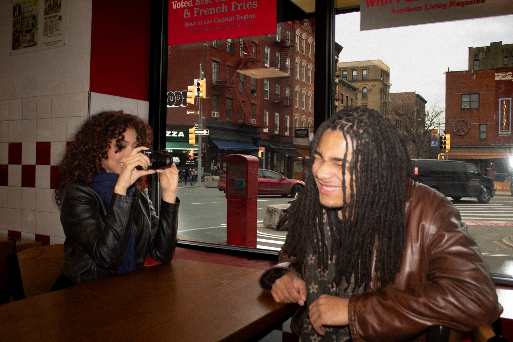

03 — Community
Community
Campaigns · Civic work · Neighborhood stories
Coverage
Documentary-style photo and video coverage for candidate events, community organizing, rallies, town halls, mutual aid work, and local celebrations.
Warm, cinematic images with a focus on people, place, emotion, and the small in-between moments that make civic life feel human.
Abdul for US Senate — campaign video
Inquire
Cover your
event
For campaign events, community gatherings, civic organizations, advocacy work, and local documentary projects. Tell me what you're building and what coverage would help tell the story.
Next
Personal →